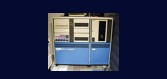
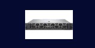
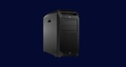

This portfolio explores the differences types of number systems including the uses and importance of number systems.
Computers exist in a variety of shapes and sizes, each built to do specific jobs based on processor power, memory capacity, and user requirements. From the world's most powerful supercomputers, which do trillions of calculations per second, to common microcomputers such as laptops and desktops used at home or at school, each category serves a distinct purpose. The primary categories are supercomputers, mainframe computers, minicomputers, servers, workstations, and microcomputers. They vary in size, speed, storage capacity, and the intricacy of the activities they can carry out.
Supercomputers are being used for large-scale scientific research, whereas mainframes process massive volumes of data for banks and enterprises. Minicomputers were originally used as midrange systems in smaller enterprises, but they have since matured into modern servers. Servers offer resources and manage networks, workstations are sophisticated systems for designers and engineers, and microcomputers are personal devices used on a daily basis. These sorts demonstrate how computers have evolved to satisfy the demands of individuals, corporations, and science in today's digital world.
an electronic device that processes data according to instructions provided by software programs. It takes input (data), processes it using a central processing unit (CPU), stores information, and produces output (results) to perform various tasks.
the biggest and fastest computers (in terms of speed of processing data). Supercomputers are designed such that they can process a huge amount of data, like processing trillions of instructions or data just in a second.
are designed in such a way that they can support hundreds or thousands of users at the same time. It also supports multiple programs simultaneously.
a medium size multiprocessing computer. In this type of computer, there are two or more processors, and it supports 4 to 200 users at one time. Minicomputers are used in places like institutes or departments for different work like billing, accounting, inventory management, etc.
computers that are combined data and programs. Electronic data and applications are stored and shared in the server computer. The working of a server computer is that it does not solve a bigger problem like a supercomputer but it solves many smaller similar ones.
a computer that requests access to the LAN and switches services to respond to the requests via a switch to perform the dedicated tasks with enhanced features. In the workstation, operations are in the form of business, engineering, etc.
a standalone and compact computer system with a central processing unit, memory, storage, and also input/output devices. It is designated for small-scale or personal use. It provides processing effectiveness in an insignificant form factor to both people and small enterprises.
| Types of Computers | Sample Image | Description | Usage |
|---|---|---|---|
| Supercomputer | Extremely fast computer used for scientific research and large-scale calculations. | Used for weather forecasting, AI research, and climate modeling. | |
| Mainframe Computers | Powerful system built for high-speed data processing and reliability. | Used in banking, airline systems, and large-scale databases. | |
| Mini Computers |  | Medium-sized computer designed for business and laboratory use. | Used for industrial control and data processing. |
| Server |  | High-performance computer that provides data and services to multiple users. | Used for web hosting, cloud computing, and database management. |
| Workstations |  | Desktop computer built for professional work and complex design tasks. | Used for 3D modeling, video editing, and engineering design. |
| Microcomputers | Personal laptop with advanced performance and energy efficiency. | Used for office work, education, and creative media production. |
| Types of Computers | Name/Brand | CPU | Memory | Processing Speed | Calculating Power | Working Principle | Energy Consumption | Field of Use |
|---|---|---|---|---|---|---|---|---|
| Supercomputer | Frontier (Cray/AMD, USA) | AMD EPYC 7A53 “Trento” CPUs with 64 cores each; ~1.5 GHz; 8.7 billion transistors per chip; 256 MB L3 cache | 9 PB Of memory total (HBM + DDR4) | 8.7 million CPU cores | 1.1 exaFLOPS (1.1 × 10¹⁸ FLOPS); ~10¹² MIPS | Processes large data sets using parallel computing across millions of cores. | 21 MW | Scientific simulations, weather modeling, nuclear research, AI model training |
| Mainframe Computers | IBM z16 | IBM Telum 7 nm chip; 5.2 GHz; 8 cores/chip; 22 billion transistors; 32 MB L2 cache per core | 40 TB DDR4 | 8 cores × 5.2 GHz per chip | 200,000 MIPS | Handles many transactions at once with high reliability. | 10–15 kW per frame | Banking, airline reservations, large-scale transaction processing |
| Mini Computers | DEC PDP-11/70 | 16-bit CPU; 3 MHz clock; single core; ~40,000 transistors | 256 KB – 4 MB RAM; 1 MHz speed | Single core × 3 MHz | 1 MIPS | Executes data and control tasks one instruction at a time. | 1.5 kW | Industrial control systems, laboratory data acquisition |
| Server | Dell PowerEdge R750 | Dual Intel Xeon Scalable (Ice Lake); 40 cores per CPU; 60 MB cache; 3.6 GHz | 8 TB DDR4 RAM; 3200 MT/s | 80 cores × up to 3.6 GHz | 2,000–3,000 GFLOPS | Delivers and manages data for many users over a network. | 1.2–1.6 kW | Web hosting, database management, cloud computing |
| Workstations | HP Z8 G5 Workstation | Dual Intel Xeon W9-3495X CPUs; 56 cores each; 4.8 GHz; 105 MB cache | 2 TB DDR5 ECC RAM | 112 cores × 4.8 GHz | 3 TFLOPS; ~10,000 MIPS | Runs complex design and rendering tasks with multicore power. | 1.5 kW | 3D animation, CAD modeling, scientific visualization |
| Microcomputers | Apple MacBook Pro (M4, 2024) | Apple M4 chip (3 nm); 10-core CPU, 10-core GPU, 28 billion transistors; unified cache; neural engine (38 TOPS) | 128 GB unified memory; 6400 MT/s | 10 cores × up to 4.4 GHz | 90 TFLOPS (GPU) + 550,000 MIPS (CPU) | Processes tasks efficiently using an all-in-one chip architecture. | 140 W | Office work, software development, multimedia creation, education |
| Category | Mini Computer | Micro Computer | Workstation | Server |
|---|---|---|---|---|
| Processing Speed | Moderate speed (MHz range, older systems); slower than modern computers. | Moderate to high speed (up to 4.4 GHz, few cores). | Very high speed (multi-core CPUs, up to 4.8 GHz). | Very high speed (many cores, often multi-CPU systems). |
| Memory Capacity | Small to medium (hundreds of KB to a few MB). | Moderate to large (8 GB – 128 GB). | Large (up to 2 TB RAM). | Very large (can exceed 8 TB for enterprise servers). |
| Power Consumption | Moderate (around 1–2 kW). | Low (100–200 W for laptops/desktops). | High (1–1.5 kW). | High (1–2 kW or more depending on configuration). |
| Minimum | Cabinet-sized or rack-mounted, midrange. | Small, portable devices (laptops, desktops). | Tower-sized desktop, larger than microcomputers. | Rack-mounted units (1U–4U) or tower |
| Usage | Used for industrial control and data processing in small organizations. | Used for personal tasks, education, and office work. | Used for engineering, graphic design, and scientific research. | Used for web hosting, database management, and network services |
Mini computers are older midrange systems, now largely replaced by servers. Microcomputers are the smallest and most common, designed for individual users. Workstations are more powerful than microcomputers, built for professional tasks.Servers have the highest memory and core count, optimized to handle many users and processes at once.